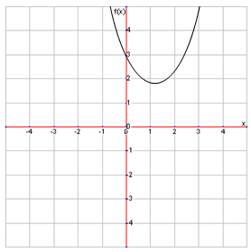

Qudratic Equations in Vertex Form
Recall that any equation with the equation \(y=mx+b\) is graphed as a straight line. Now, we’re going to discuss the graphing of quadratic equations in the form \(ax^2+bx+c\). You may notice that the graph of a quadratic in this form looks like a curve called a parabola. For example, the graph of \(x^2-2x+3\) is displayed below.
The point at the bottom of the curve is called the vertex, which defines the bottommost (or topmost in some cases) portion of the graph. Notice how the parabola is symmetrical from left to right. The line that divides the parabola in half is called the axis of symmetry. If the vertex is at point \((h, k)\), then the equation for the axis of symmetry is \(x = h\).
An easy way to find a parabola’s vertex is to put it into vertex form, which is as follows:
\[y=a(x-h)^2+k\]
Essentially, you try to transform the quadratic into this form by completing the square. The vertex is, as stated above, \((h, k)\). By putting a parabola in this form, it is easy to find the vertex by simply glancing at it.
Each parabola also has a number of intercepts where it intercepts the major axes. These intercepts are called the y-intercepts and x-intercepts. A parabola’s y-intercept(s) is the point where the parabola intercepts the y-axis, while a parabola’s x-intercept(s) is the point where the parabola intercepts the x-axis. While a parabola must have a y-intercept, it by no means has to have any x-intercepts. The graph above, for example, has a y-intercept, but never intercepts the x-axis.
Recall that the equation of a parabola is \(y=ax^2+bx+c\). The y-intercept is the point where x equals to 0. To find that, simply plug in 0 for x. Since our original equation is \(y=x^2-2x+3\), plugging in 0 for every x gives us \(y=3\). Our y-intercept is then \((0,3)\).
Finding the x-intercepts is a bit more difficult. To find them, you have to solve the equation for when y is equal to 0. Yet, recall that not all parabolas have x-intercepts. To figure out whether a parabola has x-intercepts before you begin searching for one, use the discriminant from the last lesson. Recall that if the discriminant is negative, there are no solutions. In our current example, the discriminant is indeed negative, confirming that there are no x-intercepts. If there are, however, then simply use the quadratic formula to find the x-coordinates for the x-intercepts. The y-coordinate will always be 0 for the x-intercepts.
Not all parabolas will open upwards, though, such as in the current example. Sometimes they will open downwards. To figure out whether they open upwards or downwards, simply look at the coefficient for the \(x^2\) term. If it’s positive, then the parabola opens upwards. If it’s negatives, then the parabola would open downwards.
To graph a parabola, you find all the points discussed (the vertex and intercepts). Recall that the vertex is the minimum / maximum point for the parabola. If the intercepts are above the vertex, then the graph opens upwards. If the intercepts are below the vertex, then the graph opens downwards. After you graph these points, it’s simply connect the dots. If you want your graph to be more precise, you can always plug in any number into x, read the resulting y, and combine the two to create new points.